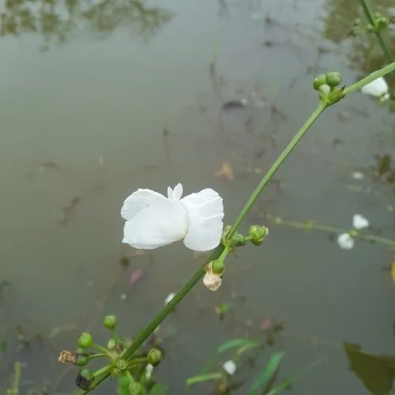

水生植物 · 植物界
皇冠草 Echinodorus grandiflorus

泽泻科多年生挺水草本，叶片宽大呈箭形、花白色三瓣，原产南美沼泽，是大型水族箱中气场十足的背景水草。
- 分类
- 门被子植物门纲木兰纲目泽泻目科泽泻科属皇冠草属
- 栖息环境
- 亚马逊流域沼泽、河漫滩与浅水湖泊，喜强光与温暖静水
- 地理分布
- 原产南美洲巴西、阿根廷等地，中国及世界各地水族与园林引种栽培
- 保护级别
- 暂无评估；野生居群受湿地开发影响
物种志
皇冠草为泽泻科皇冠草属多年生挺水草本，具短粗根状茎。叶基生，水上叶卵形至心形，长 20–40 厘米，具长叶柄；水下叶较狭，呈披针形，叶脉清晰。花葶高 0.6–1.2 米，分枝成圆锥花序，花白色，三瓣，直径约 3 厘米，花期 5–9 月；瘦果具棱。
皇冠草原产南美洲亚马逊流域及巴西东南部的沼泽、河漫滩与浅水湖泊，适宜水深 10–40 厘米，喜强光、温暖（22–28 ℃）与富含腐殖质的底床，水质以软水至中性为佳。它叶片宽大、株形舒展，是大型水族箱与池塘边缘常用的背景水草，也可作水上景观点缀。栽培时需提供充足根肥，否则叶片易发黄；分株或利用花葶上形成的小苗繁殖，小苗生根后剪下另行栽植即可。
形态与习性
- 株高水下叶高 30–50 厘米，花葶可达 1.2 米
- 水深适宜水深 10–40 厘米，可挺水或沉水
- 水质喜软水至中性水，pH 6.0–7.5，水温 22–28 ℃
- 光照需中强光，弱光下叶片变小、发黄
- 底床富含腐殖质的厚底砂，需补充根肥
- 繁殖分株或利用花葶上的小苗繁殖
趣味知识
- 皇冠草的花葶会在节上长出带根的小苗，剪下即可成为新植株，是它独特的繁殖方式。
- 水下叶与水上叶形状差别很大：水下叶狭长，水上叶宽大呈心形。
- 它根系发达，能有效吸收底床养分，常被用来稳定新缸的水质。
- 在原生地，皇冠草成片生长于牛轭湖与河漫滩，是水鸟与鱼类的隐蔽场所。